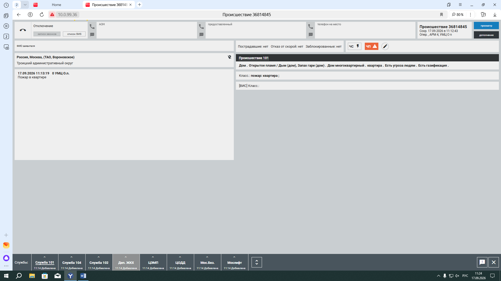

Макет: телефон ДДС
Контакты
Вводная бригаде
Входящий доклад бригады
Доклад в 112
Тревога во время разговора
Пропущенный доклад
Удержание линии
Звонок заявителю
без микрофона
освоил окно

Размер окна — потяните за любой край или угол